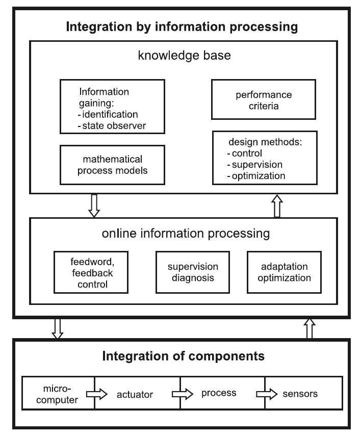
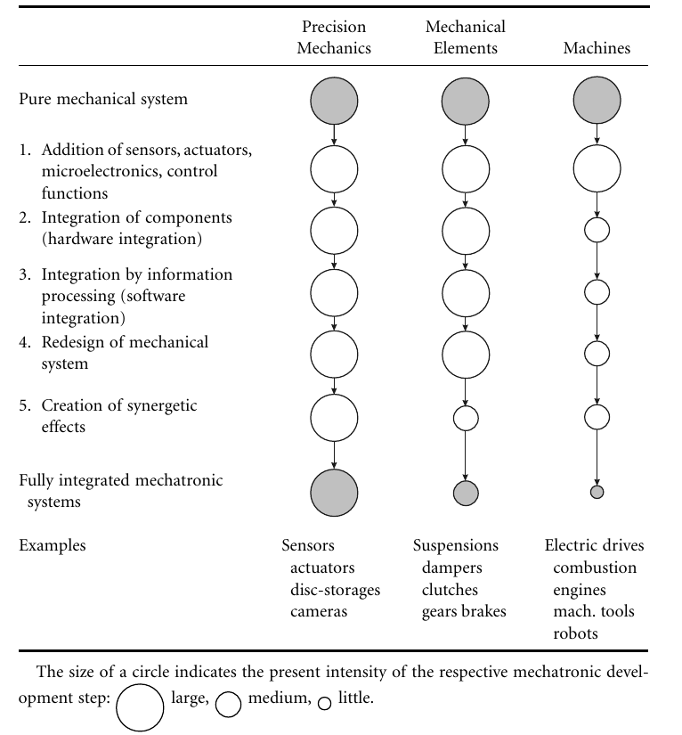

<style> .reveal section img { background:none; border:none; box-shadow:none; } #left { margin: 10px 0 15px 20px; text-align: center; float: left; z-index:-10; width:48%; font-size: 0.85em; line-height: 1.5; } #right { margin: 10px 0 15px 0; float: right; text-align: center; z-index:-10; width:48%; font-size: 0.85em; line-height: 1.5; } </style> # Unidad 1: Enfoque Mecatrónico <span style="font-size: 20.0pt; "> **Profesor:** Ing. Israel Chaves Arbaiza </span> <span style="font-size: 20.0pt;"> **Curso**: Mecatrónica </span> <img align="left" width="300" height="190" src="media/logo-ucr.png"> <img align="right" width="300" height="100" src="media/logoEIM.png"> --- ## Agenda <span style="font-size: 22.0pt; "> * Funciones de los sistemas mecatrónicos * Técnicas de integración * Procesamiento de la información * Diseño iterativo de sistemas mecatrónicos </span> --- ## Funciones de los sistemas mecatrónicos * Es crucial **dividir las tareas/funciones en mecánicas o electrónicas**, como paso para identificar qué se puede mejorar * **Mejora de las propiedades operativas**. Un sistema de control adecuado aumenta la precisión, no sólo mecánicamente sino al comparar la variabla real, con una referencia. --- ## Funciones de los sistemas mecatrónicos * Un mejor control, permite que las variables de referencia se acerquen a los valores límites, logrando temperaturas más altas, presiones mayores, voltajes más altos, etc. * **Agregar funciones nuevas**, como por ejemplo, calcular cantidades no medibles, a partir de la retroalimentación, como *tensiones internas, ángulos de deslizamiento, temperaturas, etc* Note: Control elaborado a partir del modelado y control adaptativo, permite un mayor rango de operación, en comparación a un control más fijo. --- ## Funciones de los sistemas mecatrónicos  --- ## Técnicas de integración * **Agregar componentes**, típicamente sensores inteligentes, microprocesadores y microcontroladores, los sistemas embebidos juegan un papel muy importante en esta etapa. * **Agregando software para procesar la información**. Se refiere a funciones de control avanzado, como procesos de diagnóstico, optimización, gestión de los procesos, supervisión, lo cual genera procesamiento en tiempo real. Note: De esta manera, los sistemas mecánicos, al final están gobernados por varios sistemas de control al mismo tiempo. --- ## Técnicas de integración  --- ## Sistemas de procesamiento de la información **Arquitectura de control multinivel:** 1. Control de bajo nivel (linealización, estabilización) 2. Control de alto nivel (estrategias avanzadas de control retroalimentado) 3. Supervisión, diagnóstico 4. Optimización 5. Gestión general de procesos --- ## Sistemas de procesamiento de la información  --- ## Diseño iterativo de sistemas mecatrónicos 